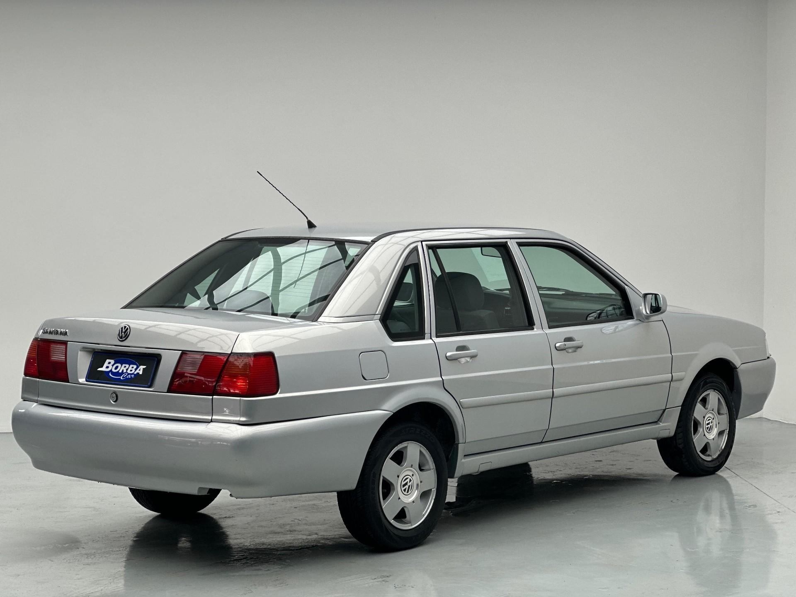

Volkswagen Santana
O Volkswagen Santana foi sinônimo de respeito nas ruas brasileiras. Nos anos 90 e 2000, seu porte, conforto e visual imponente fizeram dele um dos sedãs mais desejados por quem buscava um carro grande e de presença.
Ficha Técnica
Ano
1984 - 2006
Motor
1.8 | 8v / 2.0 | 8v
Potência
92 - 125 cv
Câmbio
Manual / Automático
Tração
Dianteira
Carroceria
Sedã / Station Wagon
Combustível
Gasolina / Álcool
FIPE
R$ 3.397 ~ R$ 29.908